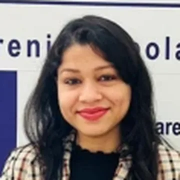
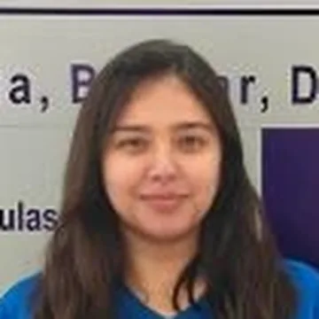
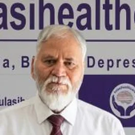
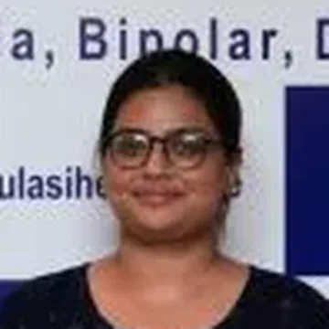
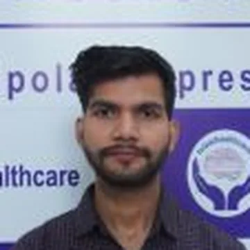
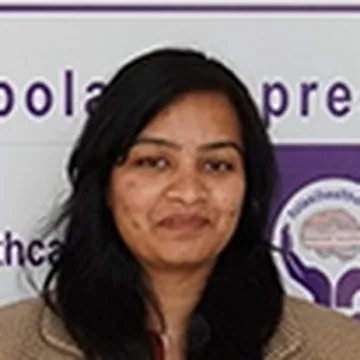
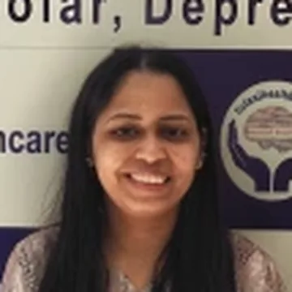
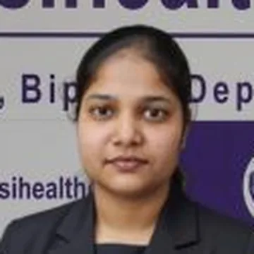

Get to know Dr. Gorav Gupta
A name in the field of psychiatry in Delhi NCR, his expertise has been honed for 40+ years guiding clients in their de-addiction and rehabilitation journey.
Dr. Gorav Gupta is an established senior consultant psychiatrist and the Founder of Tulasi Healthcare, Delhi. His deep experience within the field of de-addiction and rehabilitation led him to understand the concerns faced by his patients and led him to establish an institution that caters to their needs in the most compassionate and ethical way possible.
Pioneering in specialised work in psychosocial rehabilitation in psychiatry, his expertise has been honed by delivery on multiple national projects and being a part of the most prestigious societies and institutions that govern the psychiatric space in the country.
His expertise extends to areas of geriatric psychiatry, pharmacological management, community outreach services, occupational therapy, as well as forensic psychiatry.

Biography
Graduating from some of the top institutions that cater to psychiatric education in the country, Dr. Gorav Gupta became a senior consultant psychiatrist after he pursued his M.B.B.S. from Maulana Azad Medical College and his M.D. from Lady Hardinge Medical College in 1997.
After he honed his skills deeply in the field of rehabilitation and de-addiction psychiatry, he decided to step into the community through Tulasi Psychiatric & Rehabilitation Centre. Running since 2002, it is a well-known institution that has adopted multiple modern treatment modules to treat addiction and many other mental health related disorders in the most effective ways possible.
Serving the community, he has been running various charitable activities like free OPD camps for the underprivileged and working with the Delhi government in the Department of Social Welfare to understand the concerns of the society and providing manageable measures to take care of the same.
Positions and memberships
- President, Mental Research Society
- Life Fellow, Indian Psychiatric Society ↗
- Life Member, Indian Medical Association ↗
- Life Member, Indian Association of Private Psychiatry
- Life Member, Delhi Psychiatric Society
- Member, National Task Force on Brain Health, NITI Aayog (co-opted 2024) ↗
- Member, Executive Council, National Institute of Mental Health Rehabilitation (NIMHR)
- Panel member reviewing the Mental Healthcare Act, 2017 ↗
Retracing the journey
Let’s walk through Dr. Gupta’s journey of becoming a renowned name in the field of psychiatry. From the early days of medical training to being involved in the committee of Mental Healthcare Act, 2017, his journey has been a prestigious one.
Press coverage: raising awareness
His views have been captured in some of the most revered publications: Times of India, Hindustan Times, Indian Express and Navbharat Times.
How Dr. Gorav Gupta works
The same approach at every consulting room and online.
The first consultation
It starts with listening: what has been happening, for how long, and how it affects work, sleep, relationships and daily life. An assessment and a diagnosis follow, then a plan that is explained in plain words before anything begins.
When admission is needed
Most people are treated as outpatients. Admission is for when someone cannot be kept safe or cannot be treated at home, and it is decided after an assessment, together with the family. How OPD and admission differ.
How families are involved
Families are often the first to notice and the ones who make the call. With the patient’s agreement, they are told about the plan, what to watch for, and what to do if symptoms worsen or use starts again.
Get to know the Tulasi team
31 psychiatrists and psychologists who work with Dr. Gupta at Tulasi Healthcare.
- Dr. Ratnarakshit IngoleSenior Consultant Psychiatrist
- Dr. (Col.) Pavan Kumar PardalSenior Consultant Psychiatrist
- Dr. Anu YadavConsultant Psychiatrist
- Dr. Ichpreet SinghConsultant Psychiatrist

Dr. Poorva GuptaConsultant Psychiatrist
Dr. Alisha NagarConsultant Psychiatrist- Dr. Pooja SharmaConsultant Psychiatrist
- Dr. Rini MauryaConsultant Psychiatrist
- Dr. Kritika SoniConsultant Psychiatrist
- Dr. Sameer GulianiConsultant Child and Adolescent Psychiatrist
- Dr. Suravi DasConsultant Psychiatrist

Dr. Ram Chander JilohaSenior Consultant Psychiatrist- Dr. Samridhi SandoojaConsultant Psychiatrist
- Ms. Kiran SinghRehabilitation Psychologist (RCI)
- Ms. Manju KumariClinical Psychologist (RCI)

Ms. Aastha DwivediConsultant Clinical Psychologist (RCI)
Mr. Suparas JainConsultant Clinical Psychologist (RCI)
Ms. Chaya ChaudharyRehabilitation Psychologist (RCI)
Ms. Surabhi SengarRehabilitation Psychologist (RCI)- Mr. Inderjeet SinghSenior Consultant Psychologist
- Ms. Husna Zahid HussainClinical Psychologist
- Ms. Deliaka GhanghassClinical Rehabilitation Psychologist
- Dr. Pranita GaurSenior Consultant Psychologist
- Ms. Barkha SoniConsultant Clinical Psychologist
- Ms. Apoorva KhannaRCI Licensed Child and Adolescent Psychologist
- Ms. Ankita BhatnagarRehabilitation Psychologist (RCI)
- Ms. HardikaClinical Psychologist (RCI)

Ms. JyotiClinical Psychologist (A)- Ms. Angshruta MahantaPsychiatric Social Worker
- Ms. Ekta KashyapConsultant Clinical Psychologist (RCI)
- Ms. Titiksha AgnihotriClinical Psychologist (RCI)